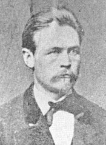
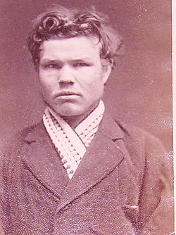

Palmarès de Suède

Jusqu'à la réforme du Code pénal de 1864, la Suède emploie officiellement deux méthodes d'exécution. A l'instar de l'ancien Régime en France, le plébéien est pendu et le noble décapité.
La pendaison tombe en désuétude dès 1836, et dès lors, seule la décapitation est employée pour supplicier les condamnés à mort. Les meurtriers et assassins sont évidemment les plus concernés par cette sentence, mais jusqu'en 1853, une agression violente non suivie de mort mais accompagnée de circonstances aggravantes pouvait conduire son auteur à la mort.
La décapitation dans les pays nordiques - Suède, Norvège, Finlande, Danemark - se pratique dans des conditions assez singulières : le condamné n'est pas ligoté - au mieux, un lien passé au niveau des coudes pour lui tenir les bras le long du corps -, il est étendu au sol, les yeux bandés - sauf s'il n'oppose un refus clair - la gorge reposant sur un morceau de bois rectangulaire, creusé en son centre pour recevoir le cou - et l'exécuteur frappe, visant entre deux vertèbres cervicales, à l'aide d'une hache large, lourde, mais avec un manche très court, ressemblant presque à un hachoir de boucher : une handbila. C'est un outil similaire qui servit aux exécutions des condamnés à mort dans les autres pays scandinaves et aussi en Allemagne, très différent de la hache énorme propre aux îles britanniques ou aux pays latins - qui usaient plus volontiers de l'épée. Du sable fin recouvre le sol devant le billot pour absorber le sang qui va être répandu.

C'est en 1903 que la Suède passe commande auprès de la France d'une guillotine Berger, le modèle offrant toutes les garanties de modernité et d'efficacité requises pour la réussite d'une exécution capitale.
A Paris, Anatole Deibler sollicite donc l'assistance d'un architecte, Ernest Deschamps, pour la confection de la machine. Ce dernier apporte quelques changements, anodins pour la plupart mais uniques, et bientôt, la guillotine est expédiée par bateau jusqu'à Stockholm.
On dit que le premier montage des bois de justice en vue d'une exécution fut accompli en 1909, pour celui qu'on appelait "L'homme de l'Amalthea", Anton Nilson. L'histoire de ce condamné à mort mérite qu'on s'y attarde. Suite à une grève générale sur les docks de Malmö, les patrons avaient contourné la situation et embauché des ouvriers Anglais pour accomplir la besogne. Pour se venger de ces "jaunes", Nilson, alors âgé de 20 ans, accompagné par deux ouvriers sans emploi comme lui, posa une bombe sur la coque de l'Amalthea, le bateau qui hébergeait les ouvriers étrangers. Dans la nuit du 11 au 12 juillet 1908, l'explosion tua un Anglais, Walter Close, et en blessa 23 autres. Si Algot Rosberg et Alfred Stern furent condamnés aux travaux forcés à perpétuité, Nilson écopa de la mort. Cependant, à la veille de l'exécution, le roi accorda sa grâce... à la grande satisfaction d'une partie de l'opinion publique qui, après avoir été scandalisée par l'acte terroriste, vint à prendre en sympathie Nilson et ses complices, allant même jusqu'à présenter une pétition paraphée par 130.000 signataires pour obtenir la libération des trois hommes ! Finalement, après que la prison où était enfermé Nilson fut prise d'assaut, le 01 mai 1917, par dix mille ouvriers demandant sa libération, le gouvernement de Nils Eden obtempéra en octobre suivant. Nilson rejoignit la Russie où la Révolution venait d'éclater, devint pilote durant la guerre civile et défendant Moscou, mais quittant l'URSS en 1926, car détestant Staline qu'il voyait comme un traître. Revenu en Suède, il devint un des fer-de-lance de la gauche, allant de ville en ville pour soutenir les causes révolutionnaires... Il mourut à 101 ans, et n'exprima jamais de regrets pour son geste. Du reste, l'identité de ses victimes était depuis longtemps oubliée, tandis que la sienne...
Un jour de 1909, donc, l'exécuteur vint jusqu'à Malmö pour y dresser la guillotine, mais pour rien...
Les exécuteurs
La langue suédoise emploie deux mots pour désigner ses exécuteurs : le Bödel, qui use de la corde, et le Skarprättare, qui manie la hache.
Chaque province dispose de son propre bourreau, et ce n'est qu'en 1900 qu'un exécuteur national est désigné pour de bon. Cependant, on peut évoquer les trois derniers bourreaux suédois :
- Per Petter Christiansson Steijnech (orthographié à tort Steineck), né le 10 juillet 1822 à Malmö. Devenu bourreau de Malmö en 1861, il n'exerce au total que six fois. Il pratique en 1887 sa dernière exécution puis part avec sa femme, le 06 juin, s'installer en Amérique où les attendent déjà leurs fils. Il avait la réputation d'exercer ivre - ce fut notamment dit pour l'exécution de Tector en 1876 -, mais en fait, il s'adonnait à la boisson en permanence, et c'était souvent le cas de la plupart des exécuteurs.
{kind=link}
- Johan Fredrik Hjort, né en 1814, devint bourreau de Stockholm en 1859, prenant la place de Carl-Ludwig Hafström (1832-1859), qui lui-même l'avait héritée de son père Carl-Gustaf (1820-1832). Sa juridiction couvrait également Uppsala, Nyköping, et il lui arriva d'aller supplicier à Malmköping et à Vasteras. Il était payé 1376 Rdr. par an, plus 10 Rdr. par exécution, ce qui était une somme des plus correctes pour l'époque (cf The Executioner : His Role and Status in Scandinavian Society, par Finn Hornum). Il mourut de maladie le 25 octobre 1882, trois mois jour pour jour après ses 14e et 15e mises à mort. Il fut remplacé par Johan Persson Palmgren, mais ce dernier ne fut jamais réquisitionné, et démissionna au bout de trois ans.

Une dizaine de condamnés sont soustraits en une décennie à son couperet : on peut citer la nourrice Hilda Nilsson, la tristement célèbre "faiseuse d'anges", qui noyait les enfants dont elle avait la garde. Condamnée à mort le 15 juin 1917, elle se pendit à la prison de Landskrona le 10 août suivant. Il y eut également le Turc Mohammed Beck Hadjetlaché. Membre du mouvement Blanc, il avait massacré trois Russes suspectés de bolchévisme en 1919. Condamné le 28 mai 1920, il vit sa peine attenuée en appel. Il fut le dernier condamné à mort de droit commun en Suède, mais Dahlman n'était déjà plus là pour voir lui "échapper". Cette année-là, renversé par un tramway, il est obligé de s'aliter, et ne recouvrera jamais la santé : il décède le 30 juillet 1920 dans son lit. Ses mémoires seront racontées dans le livre Skarprättaren, de G.O. Gunne.
Au décès de Dahlman, retrouver un volontaire pour occuper le poste d'exécuteur s'avère être une tâche extrêmement difficile, ses fils n'étant pas disposés à assumer la charge, à tel point qu'on pense souvent que c'est cet écueil qui précipita la fin de la peine de mort en Suède, la loi étant votée le 30 juin 1921.
Désormais, la guillotine suédoise est en exposition épisodique au musée de la police de Stockholm, tandis que la prison de Langholmen, désaffectée en 1975, est devenue... un hôtel renommé. A conseiller aux amateurs !
La liste qui suit ne comprend que les dernières exécutions pratiquées en Suède de 1866 à 1910, faute de renseignements suffisants pour la compléter concernant les exécutions précédentes.
| Date | Heure | Lieu | Nom | Crime | Exécution | Condamnation | 14 février 1866 | Mercredi, |
Kallbäcken | Petter Hedin | 31 ans. Abat le 02 mai 1865 Barbara Kristina Bjelkström, épouse Nyberg, 45 ans, à Edsaker d'une balle de pistolet pour la voler. Lars Nyberg, 45 ans, époux de la victime et commanditaire du crime, est condamné à mort mais gracié, Brita Lisa Mattsdotter, 39 ans, et Olof Boväng, 26 ans, sont condamnés aux travaux forcés à perpétuité. Paulina Palsdotter est acquittée. | juillet 1865 | 25 mai 1866 | Vendredi, |
Roïnge | Jonas Magnus Jonasson Borg | Tue un gardien de prison | 06 mars 1872 | Mercredi, |
Landskrona | Carl Otto Andersson | 27 ans. En 1863, décidé à se venger d'un collègue ouvrier qui avait médit de lui, il blesse légèrement un passant d'un coup de couteau dans le dos - se trompant de cible ! La victime lui pardonne, mais Andersson décide de poursuivre sa vengeance, et tue pour de bon son véritable rival. Condamné à mort, il est gracié, son jeune âge étant pris en compte. Lors d'une tentative d'évasion, blesse un gardien d'un coup de couteau. Envisage de tuer le directeur de la prison qui a établi un rationnement alimentaire, mais son projet est éventé et il est transféré à la prison de la citadelle de Landskrona. En 1871, tue de plusieurs coups de couteau dans l'estomac le sergent Lind, un des gardiens, qui l'avait envoyé pour sept mois en isolement parce qu'Andersson avait refusé d'enlever sa casquette devant lui. | Supplicié au cimetière de la garnison (Granet) en présence de 4.000 spectateurs. | 18 mai 1876 | Jeudi, 7h |
Stenkumla |  Konrad Lundqvist Petterson Tector |
38 ans, condamné en 1869 à cinq ans de travaux forcés pour faux, vol et incendie. Avec Gustav Hjert, rencontré en prison, pour avoir assez d'argent pour quitter le pays et rejoindre l'Amérique, attaque la diligence Sparreholm-Eskilstuna, le 01 août 1874, et tue d'une balle le cocher Johan August Larsson ainsi qu'un passager, Herman Upmark, avant de se rendre compte qu'ils ont attaqué le mauvais convoi - le bon, transportant le courrier et donc l'argent désiré, leur passe à côté sans s'arrêter en voyant qu'il s'agit d'une attaque à main armée. | Supplicié au sommet d'une colline par Steijnech : ce dernier doit porter trois coups de hache pour arriver à décapiter complètement le corps. Environ 500 personnes présentes. | septembre 1875. Peine confirmée par la Cour Suprême le 17 mars 1876. |
18 mai 1876 | Jeudi, 7h |
Lidamon |  Gustav Adolf Eriksson Hjert |
31 ans, condamné trois fois aux travaux forcés depuis 1864 pour vols, peines aggravées par des tentatives d'évasion répétées. Avec Konrad Tector, rencontré en prison, pour avoir assez d'argent pour quitter le pays et rejoindre l'Amérique, attaque la diligence Sparreholm-Eskilstuna, le 01 août 1874, et tue d'une balle le cocher Johan August Larsson ainsi qu'un passager, Herman Upmark, avant de se rendre compte qu'ils ont attaqué le mauvais convoi - le bon, transportant le courrier et donc l'argent désiré, leur passe à côté sans s'arrêter en voyant qu'il s'agit d'une attaque à main armée. | Supplicié par Hjort. Dernière exécution publique en Suède. | septembre 1875 Peine confirmée par la Cour Suprême le 17 mars 1876. |
13 février 1879 | Jeudi, |
Västeras | Anders Larsson | 41 ans, agriculteur. Assassine son épouse enceinte car il se sentait incapable de subvenir aux besoin d'une famille. | Première exécution en privé. | 25 juillet 1882 | Mardi, |
Stockholm | Johan Erik Österman et Carl August Andersson | 29 ans et 27 ans. Dans la nuit du 17 septembre 1881, grimpent à bord du cargo "Anna", ivres, et larguent les amarres. Les occupants se réveillent : Anders Jacobsson, le propriétaire, est assassiné, puis les deux pirates violent et égorgent Elna Maria Sanden. Menacent Carl August Nilsson, 18 ans, lui promettant la vie s'il ne fait pas de bruit. Le bateau, mal gouverné, entre en collision avec un autre bateau, et prend l'eau - le choc précipitant les dépouilles des victimes dans l'eau. Peu après une halte à terre au cours de laquelle les bandits vont acheter de la bière, Nilssen s'enfuit. Le corps de Jacobsson est repêché le 14 octobre, celui d'Elna Sanden ne sera jamais retrouvé. | Double exécution en 20 minutes. | 27 mars 1882 | 29 mars 1887 | Mardi, |
Kristianstad |  Nils Peter Hagström |
34 ans, artilleur. Entre dans la nuit du 11 au 12 janvier 1886 dans la ferme Glimminge à Ostra Broby, et poignarde le fermier Jon Sonesson, 74 ans, son épouse Lovisa Thuressondottir, 71 ans, puis bat et poignarde leur fille Karolina Karlsdotter, 31 ans, laquelle meurt à l'hôpital trois jours plus tard - et a donc l'opportunité de le dénoncer -, avant d'égorger la fille de cette dernière, Clara, sept ans, de voler un traîneau, un cheval et tous les objets de valeur de la maison et de mettre le feu à la ferme. | 07 août 1890 | Jeudi, 8h |
Kristianstad |  Anna Mansdotter, veuve Nilsson |
48 ans. Le 28 mars 1889, à Yngsjö, assassine sa bru, Hanna Johansdotter, 22 ans, en la frappant avec une bûche puis en l'étranglant, avec l'aide de son fils Per Nilsson, avec lequel elle entretient une relation incestueuse. Ensemble, mettent en scène le corps pour faire croire à une chute accidentelle dans les escaliers. Per, condamné à mort, se voit gracié, sa peine commuée en réclusion perpétuelle : il est libéré en 1913, et meurt tuberculeux en 1918. | Conduite tout de blanc vêtue devant le billot, s'avance d'un pas hésitant, regardant tout autour d'elle, mais sans résister. Regarde l'exécuteur Albert Gustaf Dahlman, qui cache la hache dans son dos. Quand l'aide lui bande les yeux et l'installe en position, sanglote. L'exécuteur se met en place, elle gémit et lève la tête : l'aide doit la replacer sur le billot. Quelques secondes après, l'exécution est faite : le coup l'a atteinte juste derrière les oreilles, séparant le crâne au niveau de la mâchoire inférieure, via la bouche. Un masque mortuaire est aussitôt réalisé pour le musée de cire de Stockholm. | 17 mars 1893 | Vendredi, 8h15 |
Gävle |  Per Johan Pettersson |
30 ans. Distilleur clandestin à Alfta avec ses deux frères, Karl Erik, 17 ans, Anders, 26 ans, et leur père, Per Olof, 56 ans. Karl Erik abat à coups de fusil le 01 mai 1892 le brigadier Albert Gawell et l'agent de police Olof Noren alors que ceux-ci étaient venus les arrêter pour avoir venu 80 litres de vodka de contrebande. Noren, touché dans le dos, meurt dix jours plus tard à l'hôpital. Per Olof n'est condamné qu'à un an de prison pour distillerie clandestine ; Anders et Karl Erik sont condamnés aux travaux forcés à perpétuité, et meurent en prison de la tuberculose (Anders en 1901, Karl en 1911). Johan, considéré comme étant le meneur de la bande, est condamné à mort bien qu'il ne soit pas l'assassin - mais il avait fait usage de son fusil lui aussi sur les policiers ce jour-là. | Incarcéré à la prison de la rue Hamilton. Réveillé à 6 heures. Très calme, fredonne quelques airs, puis passe ses derniers moments avec l'aumônier. Une quarantaine de gens présent dans le coin sud-est de la cour de la prison, blanche de neige tombée la nuit. Parmi eux, quinze étudiants en médecine venus d'Uppsala, dix journalistes. Le conseil municipal de Gävle a désigné également douze témoins, mais seuls deux ont eu le cran de venir. A huit heures, lecture de l'arrêt de mort. Johan va à l'échafaud en s'appuyant sur une béquille - il est hémiplégique à gauche depuis ses six ans - encadré par deux gardiens, calme et sans peur apparente. Après une ultime bénédiction, exécution rapide et sans bavures. La tête roule à un mètre du corps, et est confiée au professeur d'anatomie Frithjof Holmgren pour expériences scientifiques. | 12 juin 1892 ? 11 août 1892 ? |
05 juillet 1900 | Jeudi, 5h |
Karlskrona |  Theodor Julius Sallrot |
21 ans, cheminot. A Johannishus, le 07 octobre 1899, surendetté, attaque son collègue Ernst Cederberg pour lui voler 330 couronnes : le frappe d'abord avec une pierre enveloppée d'un mouchoir, puis le poignarde jusqu'à ce que le couteau se casse, et tire six coups de revolver sur lui - cinq atteignant la victime. Comme Cederberg vit encore, il le lapide à l'aide de grosses pierres, et finit par l'égorger avec un canif. Le tribunal du district de Medelsta le condamne aux travaux forcés à perpétuité, mais la cour d'appel aggrave la peine. | Repenti en prison, devient très pieux. Ecrit une dernière lettre à l'un de ses gardiens pour le remercier de son bon traitement. Très calme, s'agenouille sur l'échafaud pour prier pour ses parents. Le directeur de la prison confiera avoir vu pleurer le bourreau Dahlman après l'exécution, touché malgré lui par l'attitude digne du condamné. Le corps est récupéré par la famille. A la différence des autres inhumations de suppliciés, faites discrètement et à l'écart des autres tombes, de vraies obsèques ont lieu dans le caveau familial avec messe et fleurs, au grand dam du procureur. | 23 août 1900 | Jeudi, 6h15 |
Malmö | Lars Nilsson | 49 ans. Au cours du cambriolage de la boutique d'Olof Mansson, dans la nuit du 04 au 05 décembre 1898 à Köpingebro, se fait surprendre par l'employée Katarina Romare, 20 ans, qu'il poignarde à coups de tournevis, avant de répandre du kérosène un peu partout et de mettre le feu au bâtiment. Reconnu malade mental dangereux. | 01 février 1899 | 10 décembre 1900 | Lundi, |
Västeras |  John Filip Nordlund |
25 ans, voleur, libéré de la prison de Langholmen le 20 avril 1900. Grimpe à bord du ferry "Prins Carl", desservant la ligne Arboga-Stockholm sur le lac Mälaren dans la nuit du 16 au 17 mai 1900, avec l'intention de braquer le maximum de passagers et de voler la caisse. Abat le capitaine Olof Rönngran, un boucher, une vieille femme, un fermier et un maquignon, et blesse huit autres personnes. S'enfuit avec 845 couronnes, ne parvenant pas à mettre la main sur la caisse du bateau. | Dernière exécution à la hache. Exécution sans histoire, accomplie du premier coup. | 23 novembre 1910 | Mercredi, 8h06 |
Stockholm |  Johan Alfred Andersson-Ander |
37 ans, ancien tenancier d'hôtel. Criblé de dettes, décide de piller l'agence de change Gerells Växelkontor, à Malmtorgsgatan à Stockholm, le 05 janvier 1910 : bat à mort l'employée, Victoria Hellsten, 24 ans, de deux coups de balance romaine dans la nuque alors que celle-ci, lui tournant le dos, déjeune, et part avec 6.000 couronnes en billets suédois et étrangers. | Exécuté à la prison de Langholmen, première et unique utilisation de la guillotine Berger fournie par la France. Douze personnes présentes dans la cour (outre l'équipe d'exécuteurs). Refuse d'avoir les yeux bandés, poignets attachés dans le dos, enchaîné aux chevilles. A la lecture du verdict, affirme être innocent. Parcourt à petit pas les 75 mètres qui le séparent de la guillotine, calmement. "J'attends la mort comme une libération !" dit-il. Salue les exécuteurs d'un "God morgon, mina herrar !" (Bonjour, messieurs). Demande à dire quelques mots, mais l'exécuteur refuse. Col découpé, il est basculé. Tremblements perceptibles à l'ultime seconde. Dernière exécution capitale en Suède. | 14 mai 1910 |
{kind=link}
{kind=link}
{kind=link}
{kind=link}